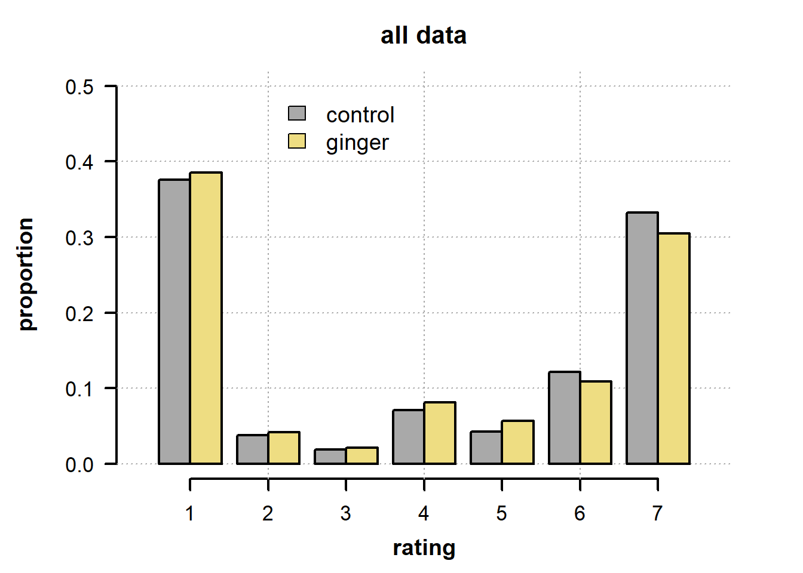
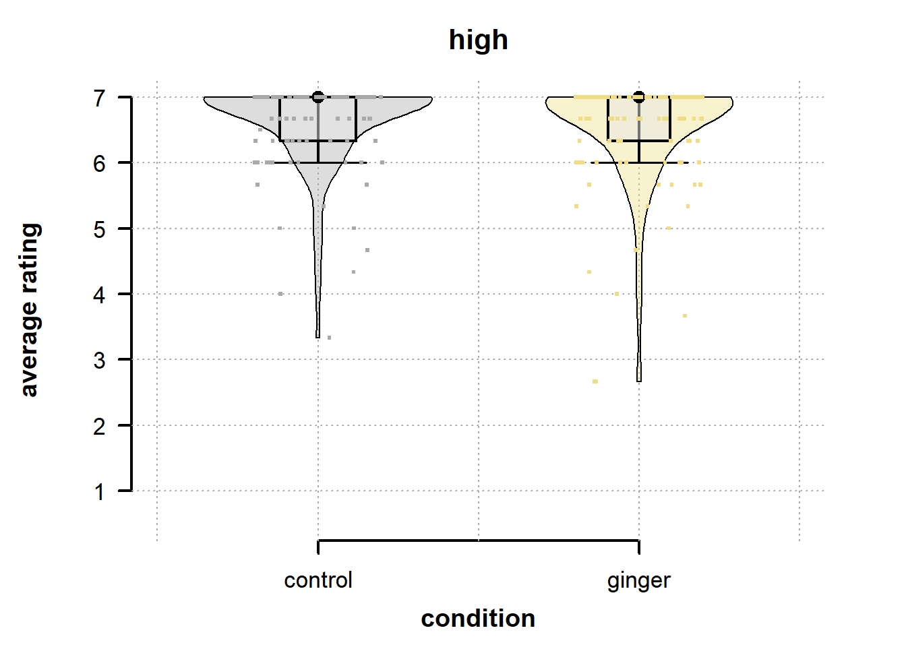
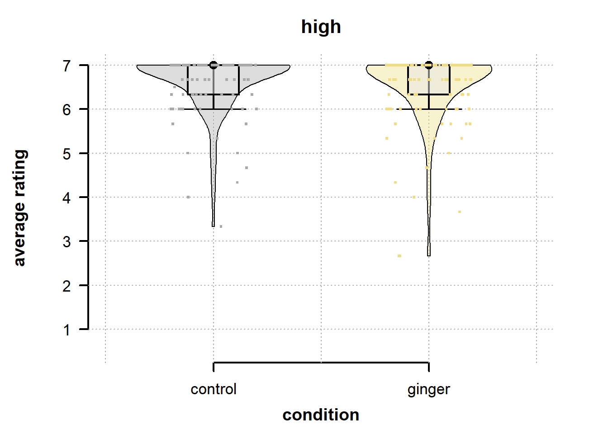
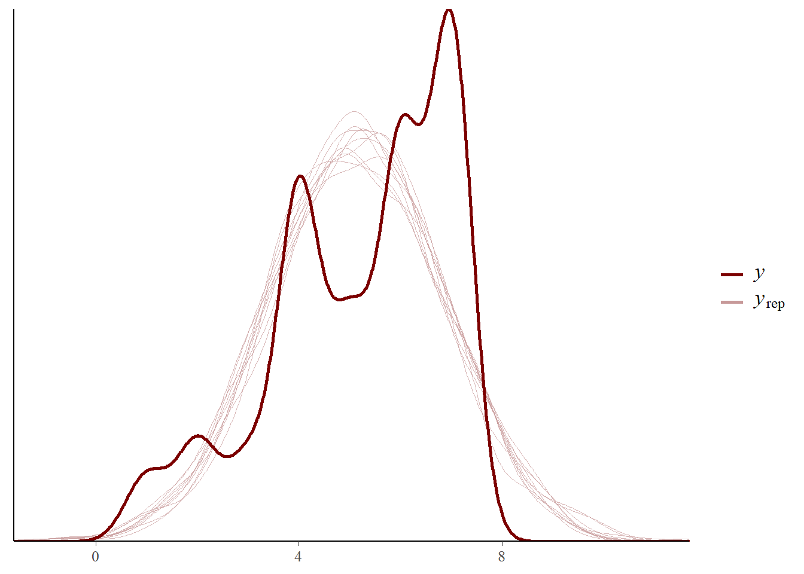
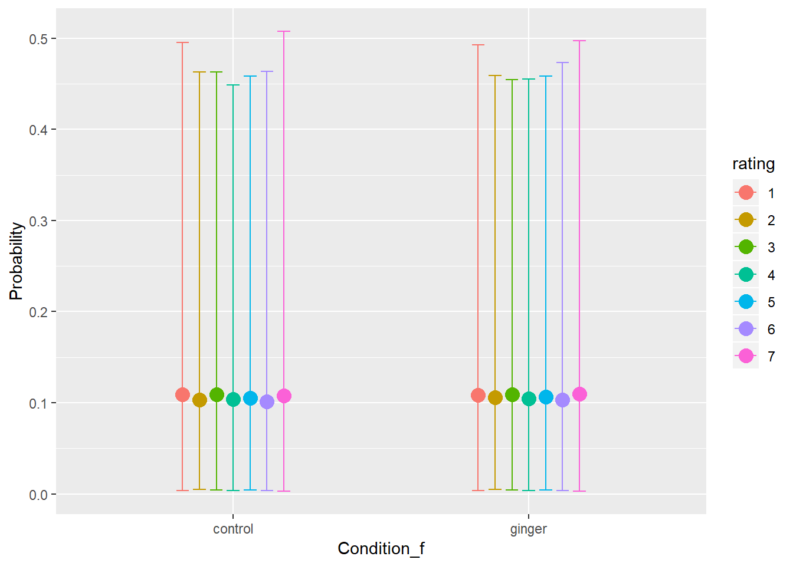
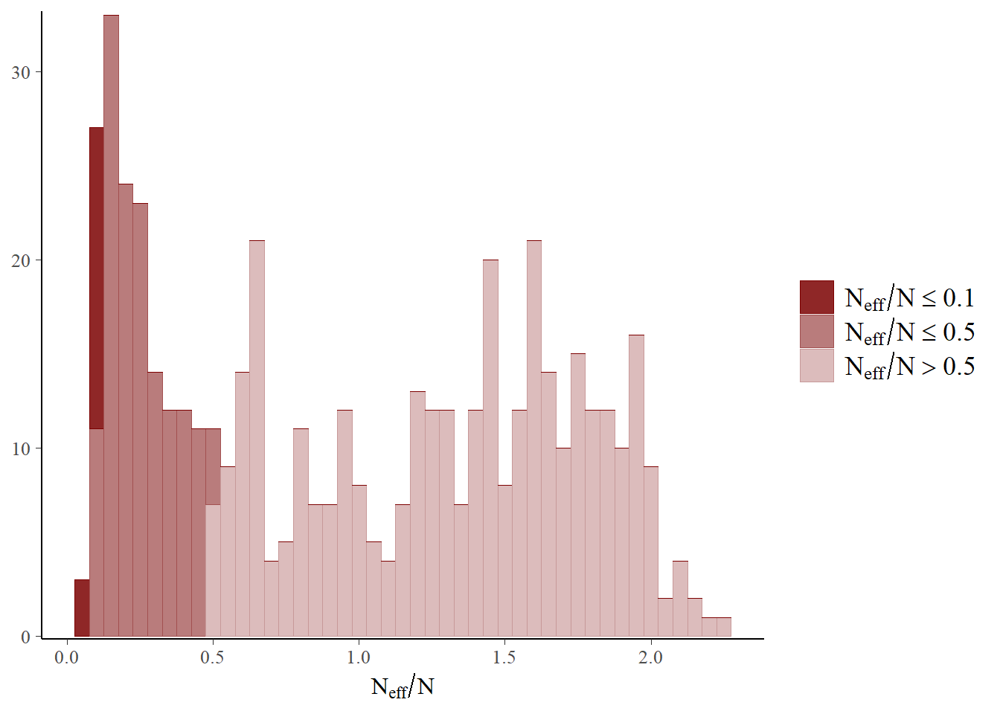
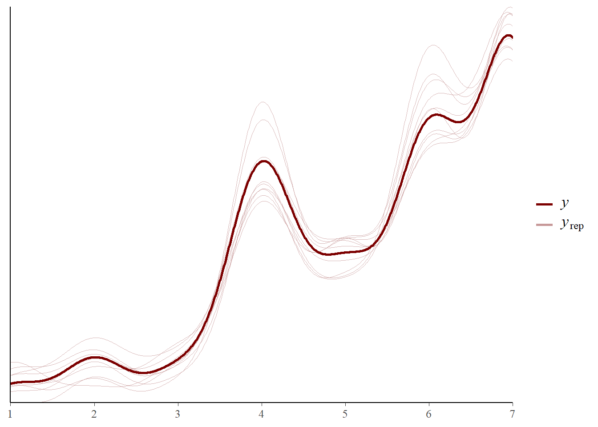
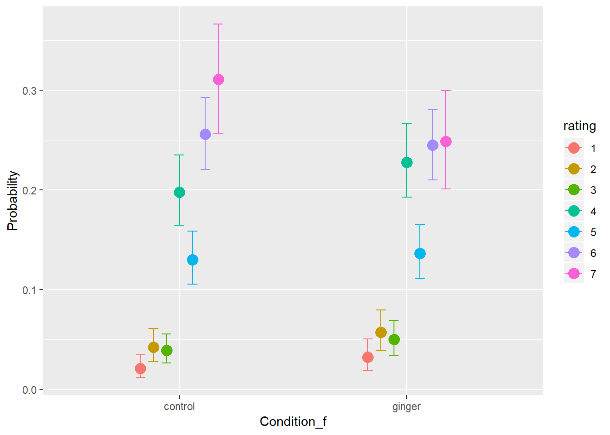
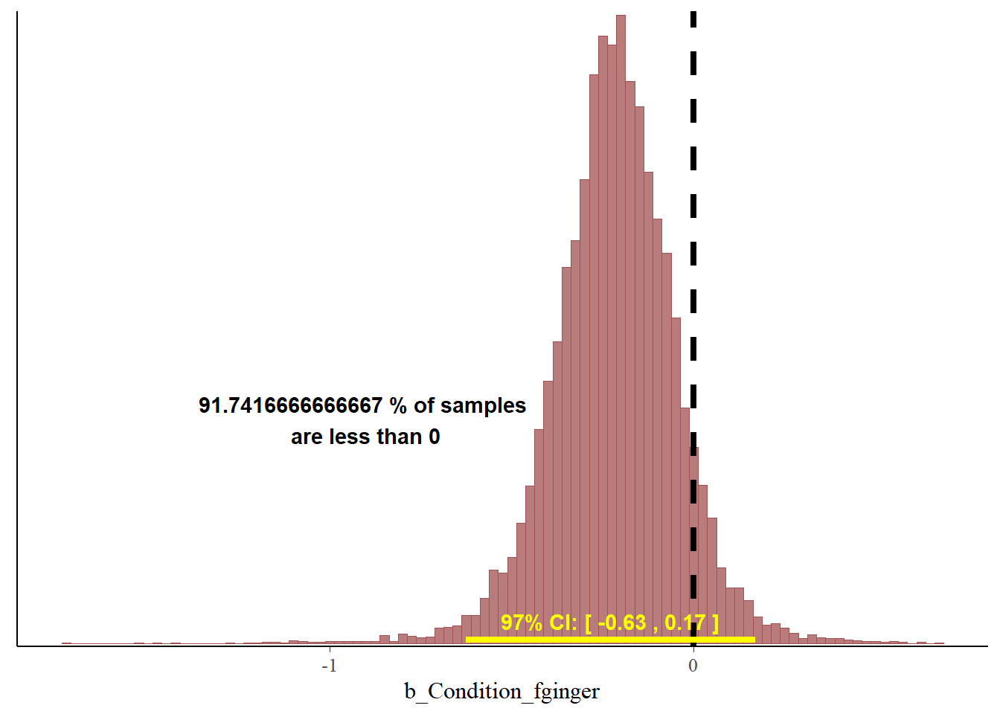

Advanced example
This example invovles the use of ordinal models to fit Likert scale data, and additionally some of the trickier aspects of choosing a multilevel structure for ones data.
Load data and packages
The data come from the first study reportd in a recent paper investigating the role of disgust for moral judgments. Participants were divided into two conditions and either given ginger or placebo to eat. Roughly an hour later participants saw pictures depicting disgusting scenes and rated their disgust (1-7).
library(brms)
library(bayesplot)
library(kableExtra)
library(brmstools)#set up number of cores to use for fitting
n_cores <- parallel::detectCores()-1dat <- read.delim(url("https://raw.githubusercontent.com/philipparnamets/mlm-workshop/master/data/ginger_data.txt"))summary(dat)## subject Condition last_meal_time valence
## Min. :100 Min. :0.00 Min. : 0 high :726
## 1st Qu.:160 1st Qu.:0.00 1st Qu.: 1 medium :726
## Median :220 Median :1.00 Median : 3 neutral:968
## Mean :220 Mean :0.52 Mean : 4
## 3rd Qu.:281 3rd Qu.:1.00 3rd Qu.: 4
## Max. :341 Max. :1.00 Max. :78
##
## item rating
## chair.disgust :242 Min. :1
## disgust.poop.disgust :242 1st Qu.:1
## disgust.rottenmeat.disgust :242 Median :4
## disgust.sneeze.disgust :242 Mean :4
## disgust.snot.disgust :242 3rd Qu.:7
## disgust.toiletstuff.disgust:242 Max. :7
## (Other) :968 NA's :5Data visualization
#define a nice bar plot function
plot_prop <- function(dat, header = "main",
y_max = 0.5){
#bar plot
par(mar = c(4,5,3,3)+.1)
plot(NA, main = "", xlab = "", ylab ="",
ylim = c(0,y_max), xlim = c(0.35,7.65),
axes = F)
axis(1, at = 1:7,
lwd = 2, cex.axis = 1.1)
axis(2, las = 2, lwd = 2, cex.axis = 1.1)
mtext("rating", 1, 2.5, font= 2, cex = 1.2)
mtext("proportion", 2, 3.5, font= 2, cex = 1.2)
mtext(header, 3, 1, font= 2, cex = 1.3)
grid(col = "darkgrey")
tab <- with(dat,
xtabs(~ rating + Condition))
tab <- prop.table(tab,2)
for(i in 1:nrow(tab)){
rect(xleft = i-.4,
ybottom = 0,
xright = i,
ytop = tab[i,1],
lwd = 2, col = "darkgray")
rect(xleft = i,
ybottom = 0,
xright = i+.4,
ytop = tab[i,2],
lwd = 2, col = "lightgoldenrod")
}
legend(x = 2, y = y_max,
legend = c("control", "ginger"),
fill = c("darkgray", "lightgoldenrod"),
bty = 'n', cex = 1.2)
}plot_prop(dat, "all data")
#neutral, high, medium items separately
for (cond in unique(dat$valence)){
d_tmp <- subset(dat, valence == cond)
plot_prop(dat = d_tmp, header = cond,
y_max = 1)
}

violinCustom <- function (data, xpos, scaling = 1,
shade = "gray", na_rm = T,
whisk = .15){
#library(sm, quietly = T, verbose=F)
limit <- c(min(data, na.rm = na_rm),max(data, na.rm = na_rm))
smout <- sm::sm.density(data, display = "none", xlim = limit)
# draws the poly
polygon(x = c(smout$estimate*scaling + xpos, xpos - rev(smout$estimate)*scaling) ,
y = c(smout$eval.points, rev(smout$eval.points)),
col = shade)
# put a box in it
half_width <- max(smout$estimate*scaling)/3 # no wider than half maximum
Q1 <- quantile(data, 0.25, na.rm = na_rm)
Q3 <- quantile(data, 0.75, na.rm = na_rm)
Q2 <- median(data, na.rm = na_rm)
IQR <- Q3-Q1
upper = Q2 + IQR*1.5
if (upper > limit[2]) {upper <- limit[2]}
lower = Q2 - IQR*1.5
if (lower < limit[1]) {lower <- limit[1]}
segments(x0 = xpos, x1 = xpos, y0 = lower, y1 = upper, col = "black", lwd =2)
segments(x0 = xpos-whisk, x1 = xpos+whisk, y0 = lower, y1 = lower, col = "black", lwd = 1.5)
segments(x0 = xpos-whisk, x1 = xpos+whisk, y0 = upper, y1 = upper, col = "black", lwd = 1.5)
polygon(x = c(xpos-half_width, xpos+half_width, xpos+half_width, xpos-half_width),
y = c(Q1,Q1,Q3,Q3), lwd = 2,
col = rgb(0.9,0.9,0.9, alpha = 0.5))
points(xpos, Q2, lwd = 3, cex = 1)
}
plot_means <- function(dat, header = "main",
viol_scale = 0.35){
par(mar=c(4,5,3,3)+.1)
plot(NA, ylab = "", xlab = "", main ="",
axes = F,
xlim = c(0.5,2.5), ylim = c(0.5,7))
axis(1, at = 1:2, labels = c("control","ginger"),
lwd = 2, cex.axis = 1.1)
axis(2, las = 2, lwd = 2, cex.axis = 1.1)
mtext("condition", 1, 2.5, font= 2, cex = 1.2)
mtext("average rating", 2, 3.5, font= 2, cex = 1.2)
mtext(header, 3, 1, font= 2, cex = 1.3)
grid(col = "darkgray")
#aggregate by subject
agg <- with(dat, aggregate(rating, list(Condition, subject),
function(x) mean(x, na.rm = T)))
cols <- c("darkgray", "lightgoldenrod")
cols2 <- c(rgb(169, 169, 169, alpha = 100, maxColorValue = 255),
rgb(238, 221, 130, alpha = 100, maxColorValue = 255))
for (i in unique(dat$Condition)){
# get points to plot
pp <- agg[agg$Group.1==i,]$x
# plot violin
violinCustom(data = pp, xpos = i+1,
shade = cols2[i+1], scaling = viol_scale)
# plot points
points(pp ~ jitter(rep(i+1,length(pp)),
factor = 1, amount = 0.2),
pch = ".", cex = 3, col = cols[i+1])
}
}#plot means instead
plot_means(dat, "all data")
#all conitions
for (cond in unique(dat$valence)){
d_tmp <- subset(dat, valence == cond)
plot_means(dat = d_tmp, header = cond)
} 

Preliminaries: Analysis of means
Since the authors use t-tests and Anovas in their original paper, we use multi-level models to test the hypothesis, ignoring for now the fact that ratings is ordinal.
Reproducing original analysis
agg <- with(dat,
aggregate(rating, list(Condition,valence, subject),mean))
names(agg) <- c("condition", "valence", "subject", "rating")Result 1: ginger does not reduce digust for highly rated stimuli
agg_1 <- subset(agg, valence == "high")
t.test(rating ~ condition, data = agg_1)##
## Welch Two Sample t-test
##
## data: rating by condition
## t = 1, df = 200, p-value = 0.3
## alternative hypothesis: true difference in means is not equal to 0
## 95 percent confidence interval:
## -0.09 0.29
## sample estimates:
## mean in group 0 mean in group 1
## 6.6 6.5R uses a Welch t-test instead of an independent samples, but it matches the reported results.
Result 2: ginger reduces digust for medium rated stimuli
agg_1 <- subset(agg, valence == "medium")
t.test(rating ~ condition, data = agg_1)##
## Welch Two Sample t-test
##
## data: rating by condition
## t = 2, df = 200, p-value = 0.04
## alternative hypothesis: true difference in means is not equal to 0
## 95 percent confidence interval:
## 0.011 0.586
## sample estimates:
## mean in group 0 mean in group 1
## 5.4 5.1This is marginally significant, but passes the .05 level and matches the reported results.
To be fair, the authors could have reported a one-sided test since the hypothesis is obviously directional:
t.test(rating ~ condition, data = agg_1, alternative = "greater")##
## Welch Two Sample t-test
##
## data: rating by condition
## t = 2, df = 200, p-value = 0.02
## alternative hypothesis: true difference in means is greater than 0
## 95 percent confidence interval:
## 0.057 Inf
## sample estimates:
## mean in group 0 mean in group 1
## 5.4 5.1Using a multi-level Gaussian model instead
Since the main results/effects are reported for the medium items, let’s focus on that. The point here is to show that the Gaussian model is a bad idea.
We let condition slopes vary both by subject and stimulus item, and set some weakly informative regularizing priors.
dat$condition_c <- ifelse(dat$Condition==1,0.5,-0.5)dat_fit <- subset(dat, valence == "medium")
dat_fit <- dat_fit[complete.cases(dat_fit),] # get rid of some (1) missing data
dat_fit$item <- factor(dat_fit$item)
pp <- c(set_prior("normal(0,.5)", "b"),
set_prior("normal(5,5)", "Intercept"),
set_prior("lkj(3)", "cor"),
set_prior("normal(0,1)", "sd", group = "item"),
set_prior("normal(0,.5)", "sd", group = "subject"),
set_prior("normal(0,2)", "sigma"))
ff <- bf(rating ~ 1 + condition_c +
(1 + condition_c | subject) +
(1 + condition_c | item))
fit_med <- brm(formula = ff, data = dat_fit,
family = gaussian(), prior = pp,
sample_prior = T,
cores = n_cores, chains = 6,
iter = 2e3, warmup = 1e3,
control = list(adapt_delta = 0.95))## Compiling the C++ model## Start sampling## Warning: There were 1 divergent transitions after warmup. Increasing adapt_delta above 0.95 may help. See
## http://mc-stan.org/misc/warnings.html#divergent-transitions-after-warmup## Warning: Examine the pairs() plot to diagnose sampling problemssummary(fit_med)## Warning: There were 1 divergent transitions after warmup. Increasing adapt_delta above 0.95 may help.
## See http://mc-stan.org/misc/warnings.html#divergent-transitions-after-warmup## Family: gaussian
## Links: mu = identity; sigma = identity
## Formula: rating ~ 1 + condition_c + (1 + condition_c | subject) + (1 + condition_c | item)
## Data: dat_fit (Number of observations: 725)
## Samples: 6 chains, each with iter = 2000; warmup = 1000; thin = 1;
## total post-warmup samples = 6000
##
## Group-Level Effects:
## ~item (Number of levels: 3)
## Estimate Est.Error l-95% CI u-95% CI Eff.Sample
## sd(Intercept) 1.00 0.43 0.43 2.04 3664
## sd(condition_c) 0.23 0.25 0.01 0.91 2656
## cor(Intercept,condition_c) 0.04 0.37 -0.68 0.72 6398
## Rhat
## sd(Intercept) 1.00
## sd(condition_c) 1.00
## cor(Intercept,condition_c) 1.00
##
## ~subject (Number of levels: 242)
## Estimate Est.Error l-95% CI u-95% CI Eff.Sample
## sd(Intercept) 0.77 0.11 0.52 0.94 317
## sd(condition_c) 0.39 0.30 0.02 1.14 250
## cor(Intercept,condition_c) 0.08 0.30 -0.55 0.65 4215
## Rhat
## sd(Intercept) 1.01
## sd(condition_c) 1.02
## cor(Intercept,condition_c) 1.00
##
## Population-Level Effects:
## Estimate Est.Error l-95% CI u-95% CI Eff.Sample Rhat
## Intercept 5.21 0.64 3.88 6.50 2010 1.00
## condition_c -0.24 0.20 -0.61 0.20 2781 1.00
##
## Family Specific Parameters:
## Estimate Est.Error l-95% CI u-95% CI Eff.Sample Rhat
## sigma 1.35 0.04 1.27 1.44 3843 1.00
##
## Samples were drawn using sampling(NUTS). For each parameter, Eff.Sample
## is a crude measure of effective sample size, and Rhat is the potential
## scale reduction factor on split chains (at convergence, Rhat = 1).post <- posterior_samples(fit_med, "^b")
color_scheme_set("red")
mcmc_areas(post,
prob = .8,
prob_outer = .97)
We can see that the model does not seem to support the conclusion about an effect of ginger on ratings. However, we can question how reasonable it is with this gaussian assumption:
pp_check(fit_med)## Using 10 posterior samples for ppc type 'dens_overlay' by default.
So instead lets fit a model adapted to Likert scale data.
Multi-level ordinal response model
Selecting a model
brms supports several ordinal and category models. There is a recent tutorial paper available that details this a bit more.
Here we will use a simple model called the cumulative model (or graded response model), assuming that there is a continuous latent variable underlying participants responses. When the value of that underlying crosses certain thresholds this translates to the different ordinal responses observed. The model is cumulative since we can relate the thresholds to a cumulative distribution function, getting the probability of observing a response at least as high as that threshold. For this workshop we assume an underlying normal distributoin, leading to a probit model. Other choices are possible and the linked paper expands on this greatly.
We can illustrate the probit and some hypothetical thresholds:
plot(NA, xlim=c(-3,3), ylim = c(0,1),
xlab = "threshold", ylab = "cumulative probability",
main="", cex.axis = 1.2, cex.lab = 1.4)
cord.x <- c(-.7,seq(-.7,1,0.01),1)
cord.y <- c(0,pnorm(seq(-.7,1,0.01)),0)
polygon(cord.x,cord.y,col='steelblue', border = F)
abline(v=c(-.7,1), col = "darkblue", lty = 2, lwd=2)
curve(pnorm, from = -3, to = 3, add=T, lwd=3)
text(x = 0, y = 0.2,
labels = paste(round(pnorm(1)-pnorm(-.7),2)*100,"%"),
col = "white", cex = 1.5)When we estimate the model we will get N-1 intercepts reflecting the thresholds for N categories. The thresholds are just deviates from a standard normal (z-scores). So to get the probability of a specific category we subtract the cumulative probability of one threshold from the one preceeding it.
In the model we additionally formulate effects of variables we measured on the underlying latent variable, in forms of a regression equation. In this model it is assumed that that the effect is uniform over categories. Other ordinal models, however, allow for the estimation of category specific effects.
After all that, the actual model formula is very simple:
dat_fit$Condition_f <- factor(dat_fit$Condition,
labels = c("control", "ginger"))
ff <- bf(rating ~ 1 + Condition_f +
(1 + Condition_f | subject) +
(1 + Condition_f | item),
family = cumulative("probit"))Prior predictive checks
When we are fitting something considerably more complicated, it is extra important to check our modeling assumptions and our priors!
#what are our priors
kable(get_prior(formula = ff,
data = dat_fit)) %>%
kable_styling(c("striped", "condensed"), full_width = F)| prior | class | coef | group | resp | dpar | nlpar | bound |
|---|---|---|---|---|---|---|---|
| b | |||||||
| b | Condition_fginger | ||||||
| lkj(1) | cor | ||||||
| cor | item | ||||||
| cor | subject | ||||||
| student_t(3, 0, 10) | Intercept | ||||||
| Intercept | 1 | ||||||
| Intercept | 2 | ||||||
| Intercept | 3 | ||||||
| Intercept | 4 | ||||||
| Intercept | 5 | ||||||
| Intercept | 6 | ||||||
| student_t(3, 0, 10) | sd | ||||||
| sd | item | ||||||
| sd | Condition_fginger | item | |||||
| sd | Intercept | item | |||||
| sd | subject | ||||||
| sd | Condition_fginger | subject | |||||
| sd | Intercept | subject |
There is some extra machinery to fit the model here, in that we specify a function to set initial values for the sampling process. To see how that connects with the underlying Stan code, see the Appendix.
pp <- c(set_prior("normal(0,3)", class = "Intercept"),
set_prior("normal(0,0.5)", class = "b"),
set_prior("normal(0,1)", class = "sd", group = "item"),
set_prior("normal(0,1)", class = "sd", group = "subject"),
set_prior("lkj(3)", class = "cor"))
tmp_dat <- make_standata(ff,
data = dat_fit,
prior = pp)
#a function of initial values
initfun <- function() {
list(
b = array(rnorm(tmp_dat$K, 0, 0.1), dim = length(tmp_dat$K)),
temp_Intercept = seq(-2,2,length.out = tmp_dat$ncat-1) + rnorm(tmp_dat$ncat-1,0,0.1),
sd_1 = runif(tmp_dat$M_1, 0.5, 1),
z_1 = matrix(rnorm(tmp_dat$M_1*tmp_dat$N_1, 0, 0.01),
tmp_dat$M_1, tmp_dat$N_1),
L_1 = diag(tmp_dat$M_1)
)
}mod_lik_pr <- brm(ff,
data = dat_fit, prior = pp,
chains = 6, cores = n_cores,
iter = 2e3, warmup = 1e3,
inits = initfun,
sample_prior = "only")## Compiling the C++ model## recompiling to avoid crashing R session## Start samplingmarginal_effects(mod_lik_pr, categorical = T)
pp_check(mod_lik_pr)## Using 10 posterior samples for ppc type 'dens_overlay' by default.Ok so this is not great.
Below is what I ended up with after going back and forth and tweaking a bit.
pp <- c(set_prior("normal(0,1)", class = "Intercept"),
set_prior("normal(0,0.5)", class = "b"),
set_prior("normal(0,1)", class = "sd", group = "item"),
set_prior("normal(0,1)", class = "sd", group = "subject"),
set_prior("lkj(3)", class = "cor"))
mod_lik_pr1 <- brm(ff,
data = dat_fit, prior = pp,
chains = 6, cores = n_cores,
iter = 2e3, warmup = 1e3,
inits = initfun,
sample_prior = "only")## Compiling the C++ model## recompiling to avoid crashing R session## Start sampling## Warning: There were 3 divergent transitions after warmup. Increasing adapt_delta above 0.8 may help. See
## http://mc-stan.org/misc/warnings.html#divergent-transitions-after-warmup## Warning: Examine the pairs() plot to diagnose sampling problemsmarginal_effects(mod_lik_pr1, categorical = T)
pp_check(mod_lik_pr1)## Using 10 posterior samples for ppc type 'dens_overlay' by default.That looks reasonable enough.
Fitting the model
Now we fit the model, with some added control statements to help get rid of the warnings we saw earlier.
mod_lik <- brm(ff,
data = dat_fit, prior = pp,
chains = 6, cores = n_cores,
iter = 2e3, warmup = 1e3,
inits = initfun,
sample_prior = T,
control= list(adapt_delta =0.95,
max_treedepth = 15))## Compiling the C++ model## recompiling to avoid crashing R session## Start samplingDiagnostics
Again we want to run diagnostics on our model to make sure it is sensible.
all_hats <- rhat(mod_lik)
mcmc_rhat_hist(all_hats)## `stat_bin()` using `bins = 30`. Pick better value with `binwidth`.
neffs <- neff_ratio(mod_lik)
mcmc_neff_hist(neffs, binwidth = 0.05)
# which parameters have low neff
mcmc_neff(neffs[neffs<0.1]) + yaxis_text(hjust = 1)We see that the model is sampling really inefficiently for some parameters. To fix this we need to adjust the priors. Again, here I went back and forth adjusting priors and refitting the model until I was satisfied. The final results is below:
pp <- c(set_prior("normal(0,1)", class = "Intercept"),
set_prior("normal(0,0.5)", class = "b"),
set_prior("normal(0,1)", class = "sd", group = "item"),
set_prior("normal(0,0.5)", class = "sd", group = "subject", coef = "Intercept"),
set_prior("normal(0,0.15)", class = "sd", group = "subject", coef = "Condition_fginger"),
set_prior("lkj(3)", class = "cor"))
mod_lik2 <- brm(ff,
data = dat_fit, prior = pp,
chains = 6, cores = n_cores,
iter = 4e3, warmup = 2e3,
inits = initfun,
sample_prior = T,
control= list(adapt_delta =0.98,
max_treedepth = 15))## Compiling the C++ model## recompiling to avoid crashing R session## Start samplingneffs <- neff_ratio(mod_lik2)
mcmc_neff_hist(neffs, binwidth = 0.05)And we’re good!
Posterior predictive checks
OK, let’s evaluate the posterior of the model.
summary(mod_lik2)## Family: cumulative
## Links: mu = probit; disc = identity
## Formula: rating ~ 1 + Condition_f + (1 + Condition_f | subject) + (1 + Condition_f | item)
## Data: dat_fit (Number of observations: 725)
## Samples: 6 chains, each with iter = 4000; warmup = 2000; thin = 1;
## total post-warmup samples = 12000
##
## Group-Level Effects:
## ~item (Number of levels: 3)
## Estimate Est.Error l-95% CI u-95% CI Eff.Sample Rhat
## sd(Intercept) 0.93 0.41 0.38 1.92 5913 1.00
## sd(Condition_fginger) 0.19 0.22 0.01 0.80 6008 1.00
## cor(Intercept,Condition_fginger) 0.01 0.38 -0.70 0.71 16323 1.00
##
## ~subject (Number of levels: 242)
## Estimate Est.Error l-95% CI u-95% CI Eff.Sample Rhat
## sd(Intercept) 0.68 0.08 0.52 0.83 3998 1.00
## sd(Condition_fginger) 0.12 0.09 0.00 0.34 2366 1.00
## cor(Intercept,Condition_fginger) 0.08 0.36 -0.61 0.72 14830 1.00
##
## Population-Level Effects:
## Estimate Est.Error l-95% CI u-95% CI Eff.Sample Rhat
## Intercept[1] -1.92 0.36 -2.60 -1.17 5638 1.00
## Intercept[2] -1.32 0.36 -1.98 -0.58 5583 1.00
## Intercept[3] -1.01 0.36 -1.66 -0.27 5581 1.00
## Intercept[4] -0.11 0.36 -0.75 0.63 5592 1.00
## Intercept[5] 0.32 0.36 -0.33 1.06 5558 1.00
## Intercept[6] 1.11 0.36 0.45 1.86 5538 1.00
## Condition_fginger -0.22 0.17 -0.56 0.12 5717 1.00
##
## Samples were drawn using sampling(NUTS). For each parameter, Eff.Sample
## is a crude measure of effective sample size, and Rhat is the potential
## scale reduction factor on split chains (at convergence, Rhat = 1).pp_check(mod_lik2)## Using 10 posterior samples for ppc type 'dens_overlay' by default.
This looks very good (compare to gaussian model earlier!).
marginal_effects(mod_lik2, categorical = T)
On a first pass, this might seem reasonable, there looks like a small difference between categories and they vary in their expected probabilities. However, compare to the actual data:
plot_prop(dat_fit, "the data")We see that the modal response is 7 and not 4 as in that plot. But we also saw in the first posterior density check that the model seems to be predicting the data. What is going on here?
First we can verify that the model is predicting the data well:
ypred_sum <- predict(mod_lik2)
str(ypred_sum)## num [1:725, 1:7] 0.001417 0.0075 0.007083 0.000667 0.000417 ...
## - attr(*, "dimnames")=List of 2
## ..$ : NULL
## ..$ : chr [1:7] "P(Y = 1)" "P(Y = 2)" "P(Y = 3)" "P(Y = 4)" ...observed <- prop.table(table(dat_fit$rating))
predicted <- colMeans(ypred_sum)
cbind(observed, predicted)## observed predicted
## 1 0.039 0.040
## 2 0.058 0.057
## 3 0.047 0.047
## 4 0.207 0.206
## 5 0.121 0.123
## 6 0.228 0.227
## 7 0.301 0.299The difference, it turns out that the marginal_effects() call uses the population-level estimates only, while predict() also uses the group-level estimates. Let’s verify this by a quick calculation, and then think about why this matters in this model.
NOTE: We are usually much more interested in the predictions coming from the full model, so its in a sense much more important that they have good concordance with the data. Part of this is an excuse to delve deeper into the nitty gritty of evaluating the model.
#extract the population level estimates
estimates <- fixef(mod_lik2)
estimates## Estimate Est.Error Q2.5 Q97.5
## Intercept[1] -1.92 0.36 -2.60 -1.17
## Intercept[2] -1.32 0.36 -1.98 -0.58
## Intercept[3] -1.01 0.36 -1.66 -0.27
## Intercept[4] -0.11 0.36 -0.75 0.63
## Intercept[5] 0.32 0.36 -0.33 1.06
## Intercept[6] 1.11 0.36 0.45 1.86
## Condition_fginger -0.22 0.17 -0.56 0.12#keep the intercepts
estimates <- estimates[1:6]
#get cumulative probabilities
prob_est <- pnorm(estimates)
# add 1 for final category
prob_est <- c(prob_est,1)
prob_est## [1] 0.027 0.093 0.156 0.457 0.624 0.866 1.000#probailities of each response [for control condition]
c(prob_est[1], diff(prob_est))## [1] 0.027 0.066 0.063 0.301 0.167 0.241 0.134We see that these match the expected values in the left panel of the marginal effects plot.
This is highly unusual. If we review the summary of the model, on thing that stands out is that we only have 3 levels of the item category. Most people doing multi-level modeling will probably tell you that is not ideal (but, importantly, its not a no-no either.
Let’s plot the data for each item separately:
#items separately
for (it in unique(dat_fit$item)){
d_tmp <- subset(dat, item == it)
plot_prop(dat = d_tmp, header = it,
y_max = 1)
}Responses to the items appear to be really different. Let’s look at the fitted coefficients:
ranef(mod_lik2)$item## , , Intercept
##
## Estimate Est.Error Q2.5 Q97.5
## disgust.rottenmeat.disgust -0.13 0.36 -0.765 0.62
## disgust.sneeze.disgust 0.55 0.36 -0.095 1.31
## disgust.snot.disgust 1.10 0.37 0.446 1.87
##
## , , Condition_fginger
##
## Estimate Est.Error Q2.5 Q97.5
## disgust.rottenmeat.disgust -0.014 0.15 -0.34 0.31
## disgust.sneeze.disgust 0.018 0.15 -0.29 0.36
## disgust.snot.disgust 0.012 0.16 -0.32 0.37Two things stand out:
- There are large differences in the estimated intercept depending on item. (Remember, these are on a standard normal scale)
- There are very small differences in the estimated slopes - which is the variable we care about in this analysis.
While not conclusive, it is hinting us that maybe we should look into this a bit more.
Fitting an alternative model
Here we refit the model but drop the varying effects for items.
ff <- bf(rating ~ 1 + Condition_f +
(1 + Condition_f | subject),
family = cumulative("probit"))
pp <- c(set_prior("normal(0,1)", class = "Intercept"),
set_prior("normal(0,0.5)", class = "b"),
set_prior("normal(0,0.5)", class = "sd", group = "subject", coef = "Intercept"),
set_prior("normal(0,0.15)", class = "sd", group = "subject", coef = "Condition_fginger"),
set_prior("lkj(3)", class = "cor"))
tmp_dat <- make_standata(ff,
data = dat_fit,
prior = pp)
#a function of initial values
initfun <- function() {
list(
b = array(rnorm(tmp_dat$K, 0, 0.1), dim = length(tmp_dat$K)),
temp_Intercept = seq(-2,2,length.out = tmp_dat$ncat-1) + rnorm(tmp_dat$ncat-1,0,0.1),
sd_1 = runif(tmp_dat$M_1, 0.5, 1),
z_1 = matrix(rnorm(tmp_dat$M_1*tmp_dat$N_1, 0, 0.01),
tmp_dat$M_1, tmp_dat$N_1),
L_1 = diag(tmp_dat$M_1)
)
}
mod_lik3 <- brm(ff,
data = dat_fit, prior = pp,
chains = 6, cores = n_cores,
iter = 4e3, warmup = 2e3,
inits = initfun,
sample_prior = T,
control= list(adapt_delta =0.98,
max_treedepth = 15))## Compiling the C++ model## recompiling to avoid crashing R session## Start samplingpp_check(mod_lik4)## Using 10 posterior samples for ppc type 'dens_overlay' by default.marginal_effects(mod_lik3, categorical = T)
The marginal effects now resemble our expectations better.
summary(mod_lik3)## Family: cumulative
## Links: mu = probit; disc = identity
## Formula: rating ~ 1 + Condition_f + (1 + Condition_f | subject)
## Data: dat_fit (Number of observations: 725)
## Samples: 6 chains, each with iter = 4000; warmup = 2000; thin = 1;
## total post-warmup samples = 12000
##
## Group-Level Effects:
## ~subject (Number of levels: 242)
## Estimate Est.Error l-95% CI u-95% CI Eff.Sample Rhat
## sd(Intercept) 0.46 0.08 0.30 0.62 2671 1.00
## sd(Condition_fginger) 0.12 0.09 0.01 0.34 2717 1.00
## cor(Intercept,Condition_fginger) 0.05 0.36 -0.63 0.72 12363 1.00
##
## Population-Level Effects:
## Estimate Est.Error l-95% CI u-95% CI Eff.Sample Rhat
## Intercept[1] -2.04 0.12 -2.27 -1.82 8760 1.00
## Intercept[2] -1.53 0.10 -1.72 -1.34 10048 1.00
## Intercept[3] -1.27 0.09 -1.44 -1.09 10561 1.00
## Intercept[4] -0.52 0.08 -0.68 -0.37 12054 1.00
## Intercept[5] -0.17 0.08 -0.32 -0.02 12413 1.00
## Intercept[6] 0.49 0.08 0.34 0.65 11844 1.00
## Condition_fginger -0.19 0.10 -0.38 0.01 10916 1.00
##
## Samples were drawn using sampling(NUTS). For each parameter, Eff.Sample
## is a crude measure of effective sample size, and Rhat is the potential
## scale reduction factor on split chains (at convergence, Rhat = 1).We can see that the estimated intercepts are very different now as well.
Model comparison
Which model should we do our inference on. This is tricky and there won’t be just one answer. Here we will rely on model comparison via LOO-CV.
loo_lik2 <- loo::loo(mod_lik2, cores = 3, reloo = T)
loo_lik3 <- loo::loo(mod_lik3, cores = 3, reloo = T)compare_ic(loo_lik2, loo_lik3)## LOOIC SE
## mod_lik2 2292 39
## mod_lik3 2459 36
## mod_lik2 - mod_lik3 -168 23We see that our original model is preferred after all!
Let’s plot the category-wise predictions together with our data.
plot_prop(dat_fit, "data + model")
c_pred <- colMeans(ypred_sum[dat_fit$Condition==0,])
c_quant <- apply(ypred_sum[dat_fit$Condition==0,], 2, function(x) quantile(x, c(.25,.75)))
points(x = seq(1,7)-.2, y= c_pred,
pch = "X", cex = 1.8)
segments(x0 = seq(1,7)-.2,
y0 = c_quant[1,],
y1 = c_quant[2,],
lwd = 2)
g_pred <- colMeans(ypred_sum[dat_fit$Condition==1,])
g_quant <- apply(ypred_sum[dat_fit$Condition==1,], 2, function(x) quantile(x, c(.25,.75)))
points(x = seq(1,7)+.2, y= g_pred,
pch = "X", cex = 1.8, col = "red")
segments(x0 = seq(1,7)+.2,
y0 = g_quant[1,],
y1 = g_quant[2,],
lwd = 2, col = "red")Inference
post <- posterior_samples(mod_lik2, "^b")
q_97 <- quantile(post$b_Condition_fginger, c(0.015, 0.985))
q_97## 1.5% 98%
## -0.63 0.17We can also calculate the posterior probability that the effect is less than 0:
prob <- sum(post$b_Condition_fginger<0)/length(post$b_Condition_fginger)
paste(prob*100,"% of samples are less than 0")## [1] "91.7416666666667 % of samples are less than 0"We can straightforwardly combine this information in a plot:
mcmc_hist(post, "b_Condition_fginger", binwidth = 0.025) +
geom_vline(xintercept = 0, size = 1.5, linetype = "dashed") +
geom_segment(aes(x = q_97[1], xend = q_97[2], y = 5, yend = 5),
size = 1.5, colour = "yellow") +
annotate("text",
x = mean(q_97), y = 30,
label = paste("97% CI: [", round(q_97[1],2), "," , round(q_97[2],2), "]" ),
colour = "yellow", fontface = 2) +
annotate("text",
x = -0.9, y = 300,
label = paste(prob*100,"% of samples \nare less than 0"),
fontface = 2)
With this method the answer to our question is maybe!
Let’s also assess with Bayes Factors.
h <- hypothesis(mod_lik2, "Condition_fginger=0")
h## Hypothesis Tests for class b:
## Hypothesis Estimate Est.Error CI.Lower CI.Upper Evid.Ratio Post.Prob Star
## 1 (Condition_fginger) = 0 -0.22 0.17 -0.56 0.12 1.1 0.53
## ---
## '*': The expected value under the hypothesis lies outside the 95%-CI.
## Posterior probabilities of point hypotheses assume equal prior probabilities.plot(h)With this method the answer is that it is as likely as it was before (see Appendix A for the effect of changing the prior)
Summary
We have seen:
- It is probably a good idea to analyze ordinal data using ordinal models
- Finding a good model can take time
- Taking the multi-level structure of our data into account, affects what we conclude about the data using the model
Appendix A : Priors and Bayes Factors
ff <- bf(rating ~ 1 + Condition_f +
(1 + Condition_f | subject),
family = cumulative("probit"))
pp <- c(set_prior("normal(0,1)", class = "Intercept"),
set_prior("normal(0,0.1)", class = "b"),
set_prior("normal(0,0.5)", class = "sd", group = "subject", coef = "Intercept"),
set_prior("normal(0,0.15)", class = "sd", group = "subject", coef = "Condition_fginger"),
set_prior("lkj(3)", class = "cor"))
tmp_dat <- make_standata(ff,
data = dat_fit,
prior = pp)
#a function of initial values
initfun <- function() {
list(
b = array(rnorm(tmp_dat$K, 0, 0.1), dim = length(tmp_dat$K)),
temp_Intercept = seq(-2,2,length.out = tmp_dat$ncat-1) + rnorm(tmp_dat$ncat-1,0,0.1),
sd_1 = runif(tmp_dat$M_1, 0.5, 1),
z_1 = matrix(rnorm(tmp_dat$M_1*tmp_dat$N_1, 0, 0.01),
tmp_dat$M_1, tmp_dat$N_1),
L_1 = diag(tmp_dat$M_1)
)
}
mod_lik4 <- brm(ff,
data = dat_fit, prior = pp,
chains = 6, cores = n_cores,
iter = 4e3, warmup = 2e3,
inits = initfun,
sample_prior = T,
control= list(adapt_delta =0.98,
max_treedepth = 15))## Compiling the C++ model## recompiling to avoid crashing R session## Start samplingpost <- posterior_samples(mod_lik4, "^b")
q_97 <- quantile(post$b_Condition_fginger, c(0.015, 0.985))
q_97## 1.5% 98%
## -0.253 0.062Very similar to before.
prob <- sum(post$b_Condition_fginger<0)/length(post$b_Condition_fginger)
paste(round(prob,2)*100,"% of samples are less than 0")## [1] "91 % of samples are less than 0"mcmc_hist(post, "b_Condition_fginger", binwidth = 0.025) +
geom_vline(xintercept = 0, size = 1.5, linetype = "dashed") +
geom_segment(aes(x = q_97[1], xend = q_97[2], y = 5, yend = 5),
size = 1.5, colour = "yellow") +
annotate("text",
x = mean(q_97), y = 30,
label = paste("97% CI: [", round(q_97[1],2), "," , round(q_97[2],2), "]" ),
colour = "yellow", fontface = 2) +
annotate("text",
x = -0.9, y = 300,
label = paste(prob*100,"% of samples \nare less than 0"),
fontface = 2)With this method the answer doesn’t change much.
Let’s also assess with Bayes Factors.
h <- hypothesis(mod_lik4, "Condition_fginger=0")
h## Hypothesis Tests for class b:
## Hypothesis Estimate Est.Error CI.Lower CI.Upper Evid.Ratio Post.Prob Star
## 1 (Condition_fginger) = 0 -0.1 0.07 -0.23 0.05 0.58 0.37
## ---
## '*': The expected value under the hypothesis lies outside the 95%-CI.
## Posterior probabilities of point hypotheses assume equal prior probabilities.plot(h)With this method the answer BF is suddenly close to 2. Not super-strong evidence, but a different story than earlier.
Appendix B : Viewing Stan code
Viewing Stan code.
ff <- bf(rating ~ 1 + Condition_f +
(1 + Condition_f | subject) +
(1 + Condition_f | item),
family = cumulative("probit"))
pp <- c(set_prior("normal(0,3)", class = "Intercept"),
set_prior("normal(0,0.5)", class = "b"),
set_prior("normal(0,1)", class = "sd", group = "item"),
set_prior("normal(0,1)", class = "sd", group = "subject"),
set_prior("lkj(3)", class = "cor"))
make_stancode(ff,data = dat_fit, prior = pp)## // generated with brms 2.6.0
## functions {
## /* cumulative-probit log-PDF for a single response
## * Args:
## * y: response category
## * mu: linear predictor
## * thres: ordinal thresholds
## * disc: discrimination parameter
## * Returns:
## * a scalar to be added to the log posterior
## */
## real cumulative_probit_lpmf(int y, real mu, vector thres, real disc) {
## int ncat = num_elements(thres) + 1;
## real p;
## if (y == 1) {
## p = Phi(disc * (thres[1] - mu));
## } else if (y == ncat) {
## p = 1 - Phi(disc * (thres[ncat - 1] - mu));
## } else {
## p = Phi(disc * (thres[y] - mu)) -
## Phi(disc * (thres[y - 1] - mu));
## }
## return log(p);
## }
## /* cumulative-probit log-PDF for a single response
## * including category specific effects
## * Args:
## * y: response category
## * mu: linear predictor
## * mucs: predictor for category specific effects
## * thres: ordinal thresholds
## * disc: discrimination parameter
## * Returns:
## * a scalar to be added to the log posterior
## */
## real cumulative_probit_cs_lpmf(int y, real mu, row_vector mucs, vector thres, real disc) {
## int ncat = num_elements(thres) + 1;
## real p;
## if (y == 1) {
## p = Phi(disc * (thres[1] - mucs[1] - mu));
## } else if (y == ncat) {
## p = 1 - Phi(disc * (thres[ncat - 1] - mucs[ncat - 1] - mu));
## } else {
## p = Phi(disc * (thres[y] - mucs[y] - mu)) -
## Phi(disc * (thres[y - 1] - mucs[y - 1] - mu));
## }
## return log(p);
## }
## }
## data {
## int<lower=1> N; // total number of observations
## int Y[N]; // response variable
## int<lower=2> ncat; // number of categories
## int<lower=1> K; // number of population-level effects
## matrix[N, K] X; // population-level design matrix
## real<lower=0> disc; // discrimination parameters
## // data for group-level effects of ID 1
## int<lower=1> J_1[N];
## int<lower=1> N_1;
## int<lower=1> M_1;
## vector[N] Z_1_1;
## vector[N] Z_1_2;
## int<lower=1> NC_1;
## // data for group-level effects of ID 2
## int<lower=1> J_2[N];
## int<lower=1> N_2;
## int<lower=1> M_2;
## vector[N] Z_2_1;
## vector[N] Z_2_2;
## int<lower=1> NC_2;
## int prior_only; // should the likelihood be ignored?
## }
## transformed data {
## int Kc = K - 1;
## matrix[N, K - 1] Xc; // centered version of X
## vector[K - 1] means_X; // column means of X before centering
## for (i in 2:K) {
## means_X[i - 1] = mean(X[, i]);
## Xc[, i - 1] = X[, i] - means_X[i - 1];
## }
## }
## parameters {
## vector[Kc] b; // population-level effects
## ordered[ncat-1] temp_Intercept; // temporary thresholds
## vector<lower=0>[M_1] sd_1; // group-level standard deviations
## matrix[M_1, N_1] z_1; // unscaled group-level effects
## // cholesky factor of correlation matrix
## cholesky_factor_corr[M_1] L_1;
## vector<lower=0>[M_2] sd_2; // group-level standard deviations
## matrix[M_2, N_2] z_2; // unscaled group-level effects
## // cholesky factor of correlation matrix
## cholesky_factor_corr[M_2] L_2;
## }
## transformed parameters {
## // group-level effects
## matrix[N_1, M_1] r_1 = (diag_pre_multiply(sd_1, L_1) * z_1)';
## vector[N_1] r_1_1 = r_1[, 1];
## vector[N_1] r_1_2 = r_1[, 2];
## // group-level effects
## matrix[N_2, M_2] r_2 = (diag_pre_multiply(sd_2, L_2) * z_2)';
## vector[N_2] r_2_1 = r_2[, 1];
## vector[N_2] r_2_2 = r_2[, 2];
## }
## model {
## vector[N] mu = Xc * b;
## for (n in 1:N) {
## mu[n] += r_1_1[J_1[n]] * Z_1_1[n] + r_1_2[J_1[n]] * Z_1_2[n] + r_2_1[J_2[n]] * Z_2_1[n] + r_2_2[J_2[n]] * Z_2_2[n];
## }
## // priors including all constants
## target += normal_lpdf(b | 0,0.5);
## target += normal_lpdf(temp_Intercept | 0,3);
## target += normal_lpdf(sd_1 | 0,1)
## - 2 * normal_lccdf(0 | 0,1);
## target += normal_lpdf(to_vector(z_1) | 0, 1);
## target += lkj_corr_cholesky_lpdf(L_1 | 3);
## target += normal_lpdf(sd_2 | 0,1)
## - 2 * normal_lccdf(0 | 0,1);
## target += normal_lpdf(to_vector(z_2) | 0, 1);
## target += lkj_corr_cholesky_lpdf(L_2 | 3);
## // likelihood including all constants
## if (!prior_only) {
## for (n in 1:N) {
## target += cumulative_probit_lpmf(Y[n] | mu[n], temp_Intercept, disc);
## }
## }
## }
## generated quantities {
## // compute actual thresholds
## vector[ncat - 1] b_Intercept = temp_Intercept + dot_product(means_X, b);
## corr_matrix[M_1] Cor_1 = multiply_lower_tri_self_transpose(L_1);
## vector<lower=-1,upper=1>[NC_1] cor_1;
## corr_matrix[M_2] Cor_2 = multiply_lower_tri_self_transpose(L_2);
## vector<lower=-1,upper=1>[NC_2] cor_2;
## // take only relevant parts of correlation matrix
## cor_1[1] = Cor_1[1,2];
## // take only relevant parts of correlation matrix
## cor_2[1] = Cor_2[1,2];
## }# parameters {
# vector[Kc] b; // population-level effects
# ordered[ncat-1] temp_Intercept; // temporary thresholds
# vector<lower=0>[M_1] sd_1; // group-level standard deviations
# matrix[M_1, N_1] z_1; // unscaled group-level effects
# // cholesky factor of correlation matrix
# cholesky_factor_corr[M_1] L_1;tmp_dat <- make_standata(ff,
data = dat_fit,
prior = pp)
str(tmp_dat, 1, give.attr = FALSE)## List of 19
## $ N : int 725
## $ Y : int [1:725(1d)] 7 6 6 7 7 5 4 6 7 6 ...
## $ ncat : int 7
## $ K : int 2
## $ X : num [1:725, 1:2] 1 1 1 1 1 1 1 1 1 1 ...
## $ Z_1_1 : num [1:725(1d)] 1 1 1 1 1 1 1 1 1 1 ...
## $ Z_1_2 : num [1:725(1d)] 0 1 0 0 1 1 0 0 0 1 ...
## $ Z_2_1 : num [1:725(1d)] 1 1 1 1 1 1 1 1 1 1 ...
## $ Z_2_2 : num [1:725(1d)] 0 1 0 0 1 1 0 0 0 1 ...
## $ disc : num 1
## $ J_1 : int [1:725(1d)] 3 3 3 3 3 3 3 3 3 3 ...
## $ N_1 : int 3
## $ M_1 : int 2
## $ NC_1 : num 1
## $ J_2 : int [1:725(1d)] 1 2 3 4 5 6 7 8 9 10 ...
## $ N_2 : int 242
## $ M_2 : int 2
## $ NC_2 : num 1
## $ prior_only: int 0initfun <- function() {
list(
b = array(rnorm(tmp_dat$K, 0, 0.1), dim = length(tmp_dat$K)),
temp_Intercept = seq(-2,2,length.out = tmp_dat$ncat-1) + rnorm(tmp_dat$ncat-1,0,0.1),
sd_1 = runif(tmp_dat$M_1, 0.5, 1),
z_1 = matrix(rnorm(tmp_dat$M_1*tmp_dat$N_1, 0, 0.01),
tmp_dat$M_1, tmp_dat$N_1),
L_1 = diag(tmp_dat$M_1)
)
}#example of output
initfun()## $b
## [1] 0.015
##
## $temp_Intercept
## [1] -2.02 -1.17 -0.41 0.62 1.12 1.90
##
## $sd_1
## [1] 0.65 0.57
##
## $z_1
## [,1] [,2] [,3]
## [1,] 0.003 -0.0099 0.0063
## [2,] -0.021 -0.0064 -0.0061
##
## $L_1
## [,1] [,2]
## [1,] 1 0
## [2,] 0 1